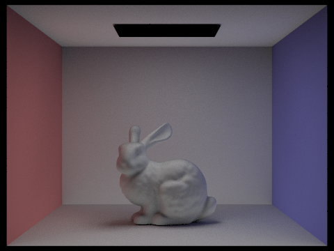

|
|
|
All of the text in your write-up should be in your own words. If you need to add additional HTML features to this document, you can search the http://www.w3schools.com/ website for instructions. To edit the HTML, you can just copy and paste existing chunks and fill in the text and image file names appropriately.
If you are well-versed in web development, feel free to ditch this template and make a better looking page.
Here are a few problems students have encountered in the past. Test your website on the instructional machines early!
"./images/image.jpg"Do NOT use absolute paths, such as
"/Users/student/Desktop/image.jpg"
.png != .jpeg != .jpg != .JPG
Here is an example of how to include a simple formula:
a^2 + b^2 = c^2
or, alternatively, you can include an SVG image of a LaTex formula.
In this homework, I implemented the whole rendering pipeline.
The first step in rendering a 3D scene onto a 2D grid of pixels is generating camera rays. For each pixel on our 2D grid,
we generate N camera rays (N is a number we choose, the number of camera rays we want per pixel). We generate camera rays
by starting with a point/pixel (x, y) in 2D image space and transforming it into 3D camera space, a space centered around our
camera (which will be the point of view we are rendering with respect to) which is at (0, 0, 0). Our point in camera space
corresponds to a point on the virtual camera sensor. Finally, we can create a ray in world space using the position of the camera
in world space, and transforming the vector representing the camera ray in camera space into world space.
After we create a ray in world space, we are able to intersect primitives (objects such as triangles and spheres) that also exist
in world space. Eventually, we will want to be able to find intersection points in order to trace rays, so it's important that we
are able to find if there is an intersection between a ray and a primitive (and give important information about the intersection
if there is one). Specifically, when we intersect a ray with a primitive, we check to see if there is an intersection (how we do
this can depend on what type of primitive we are attempting to intersect the ray with), and then if there is an intersection, we
save the time of intersection t (relative to the origin of the ray occurring at t = 0), the normal vector n at that intersection,
the primitive that made the intersection, the BSDF to use when calculating radiance, and max_t (to restrict the range of times
that our ray can intersect an object).
At a high level, to intersect a ray with a triangle, we can first intersect the ray with a the plane that the triangle is in,
and then determine whether the intersection point with the plane (if there is an intersection) is inside the triangle.
I implemented this using the Moller Trumbore Algorithm described in lecture. The Moller Trumbore Algorithm takes in the
origin o, direction d, and the 3 points of the triangle, and gives us the time of intersection t (which could be negative), and
2 of the 3 values of the intersection point in barycentric coordinates (we can use the two to calculate the third). I first
used the Moller Trumbore Algorithm to get the time of intersection between the ray and the plane and the 3 barycentric coordinates
of the intersection point with respect to the triangle. Then, I calculated the normal vector by weighting each vertex normal by
their barycentric coordinate. Finally, I determined if the intersection was valid. I checked if the ray was parallel to the plane
(if it is there is no intersection), checked if the intersection point is behind the origin (t < 0 is not valid), checked if the point
was inside the triangle (if all the barycentric coordinates are between 0 and 1 we are good), and made sure it was within the time range we
decided was valid (between min_t and max_t).
For a sphere, we can just solve for the intersection point directly. There are three cases: no intersection, 1 intersection, and 2
intersections. The time(s) t of the intersection(s) is given by the quadratic formula (which has either 0, 1, or 2 solutions
corresponding to the three cases), and can be solved using the origin o and direction d of the ray, and the center and radius squared of
the sphere. I implemented this using the equations given in lecture.
|
|
|
|
|

|
First, I constructed the first bounding box by looping through all primitives (this was done in starter code already). In this loop, I also got the centroid of each primitive, and computed the average centroid over all of the primitives. I also made a counter to keep track of how many primitives were in the input vector/list. If the number of primitives was less than the max_leaf_size, I immediately returned BVHNode containing all of the elements (this is the base case). If the number of primitives is greater than (or equal to) the max_leaf_size, I split the list of primitives along a split point, and recursively called construct_bvh on each half of the list with respect to the split point. The edge case of infinite recursion when the split point is either the start or end was avoided by making sure that there was at least one primitive given to both of the left and right lists in this situation. For how the split point was chosen, I picked the split point based on the dimension of the average centroid that varied the most within the bounding box (using the extent value) (not quite the closest to the average centroid, but approximated as such: I picked the first primitive such that the primitive's value in this dimension was lower than the average centroid, and then next primitive's value was greater than the average centroid). This heuristic is good because it splits the bounding boxes relatively evenly, and makes sure to split across the dimension that varies the most, which makes for bounding boxes that are more efficient to test intersection with (e.g. maybe for some reason like that long and flat bounding boxes will intersect a lot of rays).
|
|
|

|
|
With BVH acceleration, the four images displayed above all took < 1 second on my local computer. Without BVH acceleration, the four images were all taking > 1 minute on my machine, so BVH was a huge speedup. For simple geometries, there aren't many primitives that need to be intersected with, so BVH is not very significant. However, for these complex geometries, there are a huge number of primitives (generally triangles). Without BVH acceleration, we would have to iterate through all of these primitives individiually for every ray, which is extremely slow. With BVH, we can eliminate huge chunks of primitives just by making a single intersection with the BVH, which speeds up the rendering process substantially for geometries with many primitives.
The hemisphere sampling implementation of the direct lighting function computes the one bounce radiance at an intersection point by estimating
the integral of incoming radiance resulting from one bounce over a hemisphere around the point (based on the normal vector at the intersection
point). The process
starts with an intersection between a camera ray in world space and some primitive in the scene. To compute the estimated radiance at this
intersection point, we take N samples of vectors (N is another parameter specified by us) in the hemisphere around the point, and create a
"shadow ray" (another inverse ray coming from the intersection point into the scene). For each shadow ray, we intersect the ray with the scene,
and if it interects something, we accumulate it's contribution to the radiance at the intersection point to the monte carlo estimator
(making sure to include all the constant factors. The contribution is computed using the equation from lecture). If it intersected a light,
the radiance added would be the emission corresponding to the light, and if it intersected an object that is not a light, then the radiance
added would be 0. For the shadow ray, we make sure to set min_t to EPS_F so the shadow ray doesn't intersect the surface it started from.
The resulting monte carlo estimator is the estimate of the radiance going into the interesected point, that we pass along to the
camera to be rendered as some color.
The light sampling implementation of the direct lighting function computes the one bounce radiance at an intersection point by estimating
the incoming radiance from all lights in the scene (weighted appropriately). This process also starts with an intersection between a camera ray
in world space and some primitive in the scene. To estimate the contribution of every light to the radiance at this intersection point,
we iterate through all lights in the scene, and generate sample rays between the intersection point and the lights. Specifically, for each
light in the scene, we first determine if it is a point light or an area light. Then, if it is a point light, we generate one sample ray between
the intersection point and the point light (since all possible sample rays are the same). Then, if it intersects a primitive at a time before
it gets to the light, we don't add the contribution of the light to the radiance at the intersection point. If it doesn't, then we know
that a ray from the light does hit the intersection point, and we add the light's contribution to the radiance of the intersection point (this
is done based on the equation from lecture). If it is an area light, we generate N sample rays
between the intersection point and some point on the area light (N is a parameter we decide based on how many samples we want to take
per area light). For each sample ray, we have the same logic for deciding whether or not the light contributes radiance through that ray to
the point, and finally normalize the estimate by the number of samples per area light. The resulting monte carlo estimator is the estimate
of the radiance going into the intersected point based on light sampling.
| Uniform Hemisphere Sampling | Light Sampling |
|---|---|
|
|
|
|
|
|
|
|
|
|
|
|
For light sampling, the noise in the shadows goes down the more we sample light rays for each area light (for each pixel). This can be seen when rendering CBbunny.dae with 1, 4, 16, and 64 light rays. This is because the estimation that is happening in light sampling is on the integral over the area of the area light of the radiance that hits the intersection point. With less samples, we will have more variance (this is especially visible with 1 light ray), which makes the image look noisy. The more samples we take, the closer we approximate the integral, which makes the image look more smooth and the soft shadows look more soft and contiguous.
For the same camera rays per pixel and samples per area light, uniform hemisphere sampling is much much more noisy than lighting sampling. One potential reason is that in uniform hemisphere sampling, we are generating many more samples that have no chance of contributing any radiance to the intersection point. Since we are sampling in a hemisphere, a large proportion of the sampled rays do not intersect with a light, and will end up not contributing any radiance. In lighting sampling, all samples "have a chance" in some sense of contributing radiance to the intersection point, since we are considering a ray going from the intersection point to a light, and add it as long as there is nothing inbetween the point and the light in question.
I implemented the indirect lighting function based on the algorithm and equations described in the spec and lecture. In raytrace_pixel, all generated rays start out with depth max_ray_depth. In at_least_one_bounce_radiance, the radiance at an intersection point is calculated by recursively calling itself. For the base cases (if the ray going into an intersection point is depth 0 or depth 1) I returned the zero bounce and one bounce radiance respectively (using the zero_bounce and one_bounce functions). For the recursive case, I generated a sample ray going out from the intersection point and recursively called at_least_one_bounce_radiance on that ray (and set the ray's depth to the previous ray's depth - 1). Finally, I added the result of the recursive call times the constant factors (costheta, 1/pdf, etc.), to the one bounce radiance to get the total accumulated radiance over the path.
|
|
|
|
|
|
In CBbunny, the rendered view with only direct illumination only has shades of white or black for the bunny, while the walls/floor/ceiling look like they only have their original color plus some amount of black and white. The rendered view with indirect illumination has the colors of the two walls (red and blue) in various places other than the two walls (such as on the bunny, and the back wall + floor). Another difference is that the direct illumination one is much brighter than the indirect illumination one, so the direct illumination one contributes the most light to the end result (when we have both direct and indirect). Overall, the indirect illumination component of the end result contributes the radiance resulting from bounces on non-light materials, while the direct illumination only has the direct contribution of light onto a material.
|
|
|
|

|
|
|
|
|
In the 2nd and 3rd bounce of light, we can see the result of reflection off the red, blue, and white walls on the bunny. Overall, they look a little dimmer and represent just the indirect light coming from bounces. This shows the difference between a ray tracing and a rasterization based pipeline. In a rasterization based pipeline, we draw objects sort of independent of each other (objects don't know any color information about each other), while in a ray tracing based pipeline, an object's final color will be influenced by its surrounding environment a different amount depending on the ray tracing depth.
|
|

|
|
|
|
|
|
|
For max_ray_depth = 0, we are allowing zero bounces of light, which just corresponds to the zero_bounce_radiance function
that was written earlier. The only rays that have a nonzero radiance are those that come directly from the lights, so the only
light present in the image is the light in the ceiling. Since the other cases are allowing 1+ bounces, the actual non-light objects
in the scene are illuminated for them.
For max_ray_depth = 1, we are allowing one bounce of light, which corresponds to the one_bounce_radiance function that was
written earlier. When we are allowing one bounce, we have everything that comes from zero bounces, and then all of the illumination
that comes with one bounce (going from a light, to a point, and then to the camera), which is direct lighting.
For max_ray_depth = 2, we are allowing 2 bounces of light. We have one level of indirect lighting (light, to point, to point, to camera).
This is why the bunny has some redness on the left side and blueness on the right side (the light can bounce off the red/blue wall, then
to the bunny, then to the camera), where the max_ray_depth = 1 bunny has no redness/blueness.
The max_ray_depth = 3 has two levels of indirect lighting (light, through 3 points, then to the camera). This is like max_ray_depth = 2
except it has a bit less noise since there is more "averaging". Also, the redness/blueness coming off the wall can reach more points, since
they are allowed one more point to intersect with in a path from the light through points to the camera.
The max_ray_depth = 5 has the most detail, in terms of the weighting of colors,
and is the smoothest, since there is the largest amount of indirect lighting. This one has the
best estimate of all of the possible light going into each point (and as a result, each pixel).
Overall, the rendering looks a bit brighter and looks richer (in terms of color) the higher the max_ray_depth is. There is more red and blue
on the floor and back wall the higher max_ray_depth is.
|
|
|
|
|
|
|
|
|
|
|
|
|
|
|
|
|
|
|
|
As the sample-per-pixel rate goes up, the rendered image gets less and less "grainy" and more smooth. It's especially noticeable for the first few (1, 2, and 4 samples per pixel), and gets pretty smooth once it gets to 1024. This is because using our indirect lighting function, we simply trace a ray along a single path and return the accumulated (for isAccumBounces = true) radiance along that one path. When our sample size is small, our variance is high, so we'll have widely varying colors. When we take more and more samples, the variance decreases, and each pixel is sort of "averaged out" and it ends up looking pretty smooth.
Adaptive sampling is a technique used to make rendering more efficient. For many scenes, there are pixels that will converge much quicker than others. In a Cornell Box for example, the pixels corresponding to the floors and walls will likely converge much quicker than the pixels corresponding to a complex object being displayed (e.g. a bunny). Adaptive sampling takes advantage of this by sampling less for pixels that converge faster, using a confidence interval (with 95% confidence in our case). My implementation of adaptive sampling modifies raytrace_pixel, adding a check every samplesPerBatch samples to check if we have converged yet (based on the maxTolerance parameter). If we have converged, we break from the loop and stop adding more samples. I made variables for and accumulate s1 and s2 on every iteration of the loop to be used in the convergence calculation.
|
|
|

|
|